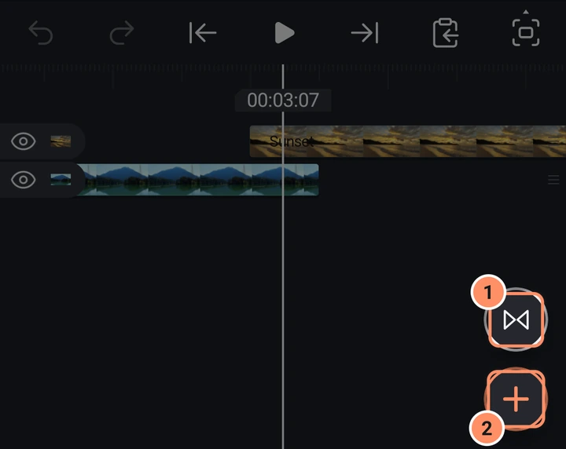

Chuyển cảnh và hoạt ảnh
Chuyển cảnh một chạm giữa các clip và hoạt ảnh Vào, Ra và Lặp cho bất kỳ lớp nào.
Cả hai đều tạo keyframe và hiệu ứng thông thường mà bạn có thể chỉnh sửa sau đó, nên bạn có thể dùng chúng làm điểm khởi đầu.
Hoạt ảnh Vào, Ra và Lặp
- Chọn một lớp hình ảnh (không phải âm thanh, máy ảnh hay đối tượng rỗng).
- Nhấn nút tròn Tạo chuyển động ở góc dưới bên phải của phần xem trước. Bảng Hoạt ảnh mở ra.
- Chọn Vào, Ra hoặc Lặp ở trên cùng, sau đó chọn một ô. Không là ô đầu tiên trong lưới.
- Đặt Thời lượng.


| Hoạt ảnh | Thời lượng | |
|---|---|---|
| Vào và Ra | Mờ dần, Trượt sang trái, Trượt sang phải, Trượt lên, Trượt xuống, Phóng to, Thu nhỏ, Bật, Nảy, Xoay tròn, Nhòe | 0,1 đến 2 giây (mặc định 0,5) |
| Lặp | Nhịp đập, Lắc lư, Lơ lửng, Xoay | 0,2 đến 4 giây (mặc định 1) |
Hoạt ảnh Vào được đặt ở đầu clip, hoạt ảnh Ra ở cuối clip, và hoạt ảnh Lặp chạy trong toàn bộ clip. Nếu phần cuối clip đó đã có chuyển cảnh, việc chọn hoạt ảnh sẽ thay thế nó, và bảng sẽ thông báo như vậy.
Chuyển cảnh giữa hai clip
Chuyển cảnh hòa trộn một clip vào clip tiếp theo. Chúng cần hai clip hình ảnh trong đó clip thứ hai bắt đầu và kết thúc muộn hơn clip thứ nhất.
- Đặt hai clip sao cho chúng chạm nhau hoặc chồng lên nhau. Khi không chọn gì, nút tròn Chuyển cảnh xuất hiện ở góc dưới bên phải của vùng dòng thời gian, ngay phía trên nút +, khi đầu phát ở điểm cắt. Hoặc chọn hai clip và nhấn Thêm chuyển cảnh giữa hai clip trong thanh ở phía dưới.
- Bảng Chuyển cảnh hiển thị "Clip A → Clip B" và một lưới các chuyển cảnh với Không đầu tiên.
- Chọn một cái và đặt Thời lượng (0,1 đến 2 giây, mặc định 0,5).


Các chuyển cảnh có sẵn: Hòa tan chéo, Mờ dần sang đen, Mờ dần sang trắng, Trượt sang trái, Trượt sang phải, Trượt lên, Trượt xuống, Đẩy sang trái, Đẩy sang phải, Đẩy lên, Đẩy xuống, Quét sang phải, Quét sang trái, Quét lên, Quét xuống, Quét kim đồng hồ, Phóng to, Thu nhỏ, Xoay tròn, Nhòe, Phát sáng, Xoáy, Lia nhanh, Glitch, Chớp sáng, Rung, Điểm ảnh và Tan nhiễu. Các chuyển cảnh Đẩy, Phóng to, Thu nhỏ và Xoay tròn có nhòe chuyển động. Lưới này cuộn được: vuốt lên để xem những chuyển cảnh cuối cùng.

Nếu các clip không chồng lên nhau đủ, ứng dụng sẽ di chuyển hoặc rút ngắn chúng và thông báo cho bạn, ví dụ "Đã dời ... sớm hơn để các clip chồng lên nhau." và "Đã rút ngắn còn 0.5 s để vừa với các clip." Các lớp âm thanh, máy ảnh và đối tượng rỗng không thể có chuyển cảnh.
Để nút Chuyển cảnh không vướng, hãy vuốt nó sang ngang về phía mép màn hình; nút sẽ trở lại khi bạn di chuyển đầu phát. Cài đặt > Trình chỉnh sửa > Nút chuyển cảnh trong bản xem trước chuyển nút này xuống góc dưới bên trái của bản xem trước.
Tự tạo của riêng bạn
Một hiệu ứng, một hiệu ứng trong nhóm Di chuyển hoặc một tập keyframe làm được việc tương tự và cho bạn kiểm soát nhiều hơn. Lưu một kiểu bạn thích dưới dạng preset để dùng lại: xem Tài nguyên, mẫu và preset.